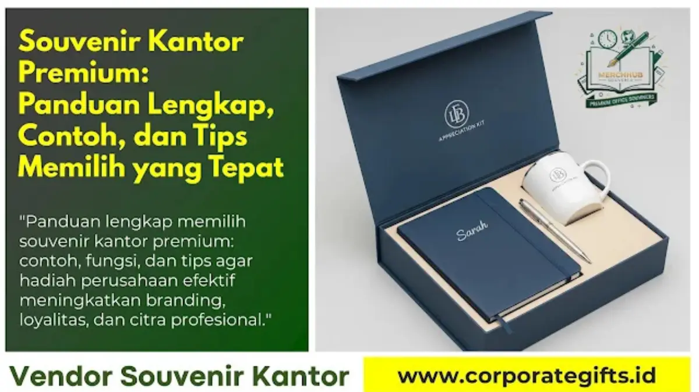

Corporate Gifts ID - Souvenir kantor premium adalah cinderamata eksklusif berkualitas tinggi yang diberikan perusahaan kepada klien, mitra bisnis, atau karyawan sebagai bentuk apresiasi sekaligus penguat citra brand. Contohnya pena logam, notebook kulit, tumbler thermal, powerbank, dan paket gift set berlogo resmi perusahaan.
Poin Kunci Souvenir Kantor Premium:
- Simbol Apresiasi Bergengsi: Memperlihatkan kepedulian dan profesionalisme perusahaan di mata klien dan karyawan.
- Daya Tahan & Kualitas Fisik: Menggunakan material pilihan agar produk memiliki masa pakai lama dan terus dimanfaatkan.
- Relevansi Fungsional: Menggabungkan nilai estetika tinggi dengan manfaat nyata bagi aktivitas kerja harian penerima.
- Perbedaan Mendasar: Souvenir berfokus pada penghargaan dan retensi loyalitas, bukan semata promosi massal.
- Efisiensi Anggaran Terukur: Cerdas mengombinasikan pemilihan item berkualitas dengan momen penyerahan yang tepat.
Bagi banyak perusahaan, souvenir kantor premium bukan sekadar hadiah seremonial belaka. Produk ini merupakan pilar strategis dalam membangun kedekatan emosional, mempererat kemitraan bisnis, serta menghadirkan penghargaan bermakna bagi karyawan berprestasi.
Apa Itu Souvenir Kantor Premium?
Souvenir kantor adalah produk khusus yang dirancang sebagai cinderamata resmi untuk dibagikan kepada karyawan, mitra bisnis, atau jajaran dewan direksi klien. Predikat premium menandakan bahwa produk tersebut dibuat menggunakan bahan bermutu tinggi, sentuhan finishing yang rapi, dan personalisasi halus seperti grafir nama atau deboss logo korporat.
Pengadaan souvenir kantor biasanya dilakukan bertepatan dengan momentum penting perusahaan, di antaranya:
- Perayaan hari jadi atau anniversary perusahaan.
- Peluncuran produk, layanan, atau ekspansi cabang baru.
- Pertemuan bisnis tahunan, RUPS, dan pameran industri berskala nasional.
- Program employee recognition atau apresiasi karyawan purnatugas.
Contoh Souvenir Kantor Premium
Terdapat beberapa kategori produk unggulan yang secara konsisten menjadi pilihan favorit korporasi di Indonesia:
- Alat Tulis Eksklusif: Pena berbahan logam kuningan berukir laser grafir, buku agenda bersampul kulit sintetis premium, atau leather binder portfolio.
- Merchandise Teknologi: Powerbank fast charging berkapasitas 10.000 mAh, wireless charging pad elegan, atau USB flash drive berkepala metal.
- Perlengkapan Kantor Harian: Tumbler vacuum stainless steel SUS304 food-grade, desk organizer kayu jati, atau kalender meja akrilik.
- Paket Gift Set Eksklusif: Kotak hardbox magnetik berisi perpaduan tumbler, notebook, dan pulpen berlogo senada.

Detail produk souvenir kantor fungsional berpadu kemasan kotak mewah siap cetak logo korporat.
Apa Saja yang Bisa Dijadikan Souvenir Kantor?
Hampir seluruh produk fisik dapat diadaptasi menjadi cinderamata perusahaan, asalkan memenuhi prinsip relevansi, nilai manfaat, dan keselarasan estetika brand. Beberapa ide inovatif lainnya mencakup:
- Produk Lifestyle: Jam meja digital minimalis, essential oil aromatherapy diffuser, atau speaker bluetooth mini bersuara jernih.
- Produk Ramah Lingkungan (Eco-Friendly): Tote bag kanvas tebal daur ulang, cutlery set serat gandum, atau tumbler berbahan bambu alami.
- Produk Khas Berbasis Lokal: Syal batik tulis bermotif korporat, atau bingkisan kopi single origin nusantara berlabel khusus.
- Souvenir Edisi Terbatas (Limited Edition): Barang cinderamata bernomor seri unik yang diproduksi terbatas untuk menciptakan prestise tinggi.
Fungsi dan Tujuan Souvenir Kantor Premium
Pemberian cinderamata berkualitas tinggi memberikan keuntungan timbal balik yang nyata bagi reputasi institusi pemberi:
- Membangun Citra Positif: Memperlihatkan integritas, kemapanan, dan perhatian detail perusahaan terhadap relasi bisnis.
- Memperkuat Retensi Loyalitas: Mitra dan klien merasa sangat dihargai sehingga kerja sama kontraktual berjalan lebih langgeng.
- Media Pemasaran Organik: Souvenir yang aktif digunakan di tempat umum bertindak sebagai media eksposur brand tanpa batas waktu.
Apa Perbedaan Souvenir dan Merchandise?
Sering kali istilah souvenir dan merchandise disamaratakan. Padahal, keduanya memiliki orientasi strategis yang sangat berlainan:
| Aspek Pembeda | Souvenir Kantor | Merchandise Promosi |
|---|---|---|
| Tujuan Utama | Kenang-kenangan, apresiasi relasi, dan penghargaan kemitraan | Branding massal, promosi penjualan, dan jangkauan publik |
| Sasaran Penerima | Klien strategis, karyawan terpilih, dan tamu kehormatan | Konsumen umum, pengunjung pameran, dan target pasar luas |
| Fokus Desain | Elegan, eksklusif, minimalis, dan sentuhan personal | Mencolok, logo berukuran besar, dan ramah produksi massal |
| Nilai Emosional | Tinggi dan disimpan dalam jangka waktu yang sangat panjang | Cenderung pragmatis untuk keperluan promosi jangka pendek |
Bagaimana Cara Memilih Souvenir Kantor Premium yang Tepat?
Agar anggaran pengadaan memberikan imbal hasil (ROI) maksimal, perhatikan lima langkah kurasi praktis berikut:
- Kenali Karakteristik Penerima: Sesuaikan jenis produk dengan profil jabatan, rentang usia, dan preferensi kerja rekanan bisnis.
- Prioritaskan Kegunaan Harian: Pilih item yang benar-benar fungsional agar logo perusahaan sering dilihat saat penerima beraktivitas.
- Terapkan Subtle Branding: Gunakan teknik laser grafir atau cetak monogram halus agar produk tetap terasa mewah dan tidak terkesan murahan.
- Sesuaikan Anggaran Secara Rasional: Kualitas premium tidak harus berbiaya fantastis, melainkan kecermatan dalam memilih perpaduan material dan kemasan.
- Sempurnakan Kemasan Gift Box: Kemasan rigid box magnetik dengan lapisan velvet di bagian dalam melipatgandakan persepsi nilai hadiah secara instan.
Kesimpulan
Souvenir kantor premium merupakan investasi cerdas untuk memperkuat reputasi korporasi, memelihara loyalitas pelanggan kunci, serta memotivasi kinerja tim internal. Dengan kurasi produk yang berorientasi pada fungsionalitas dan elegansi visual, cinderamata perusahaan Anda akan selalu dikenang secara positif.
Temukan ratusan inspirasi produk siap kustom di lini souvenir kantor dan katalog resmi CorporateGifts.ID, atau konsultasikan pengadaan perusahaan Anda langsung bersama kami.
FAQ tentang Souvenir Kantor Premium

Ditulis oleh: Vendor Souvenir Kantor
Senior Corporate Merchandise ConsultantTim konsultan spesialis CorporateGifts.ID berpengalaman dalam formulasi strategi pengadaan cinderamata korporat, kurasi gift set VIP, teknik cetak industri, dan kemitraan B2B di Indonesia.
Lihat Profil Lengkap & Portofolio